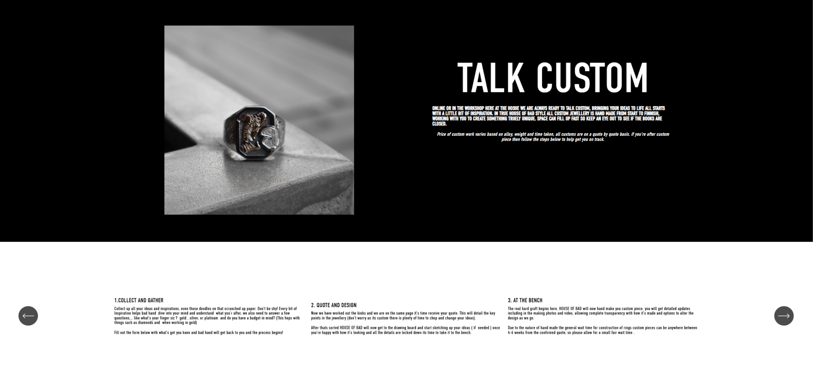
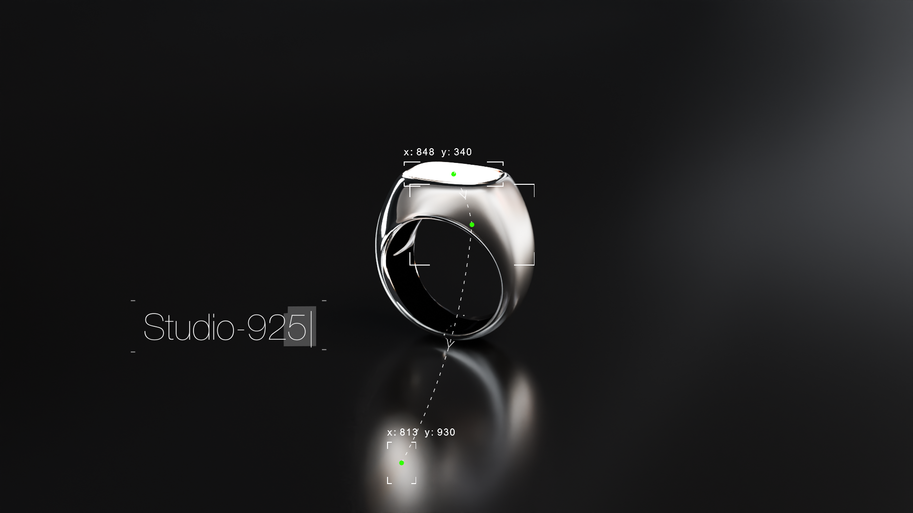
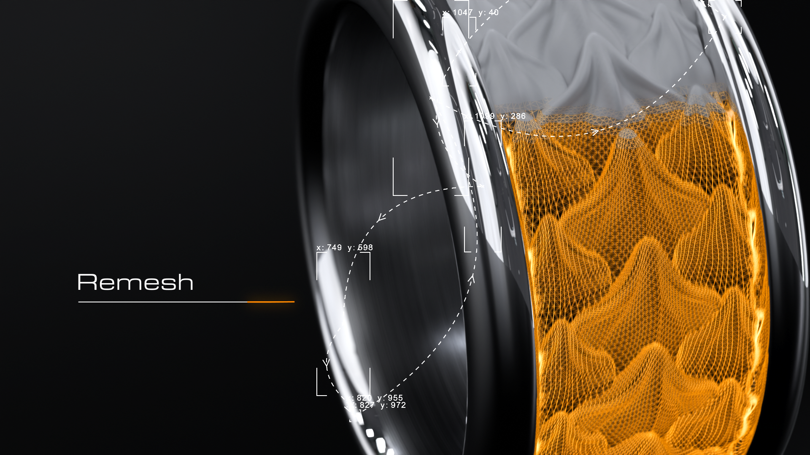
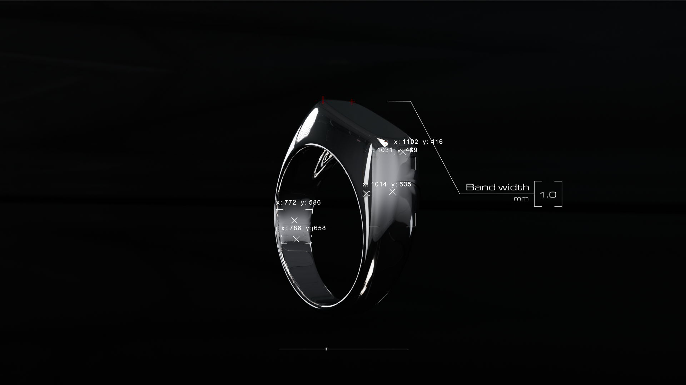
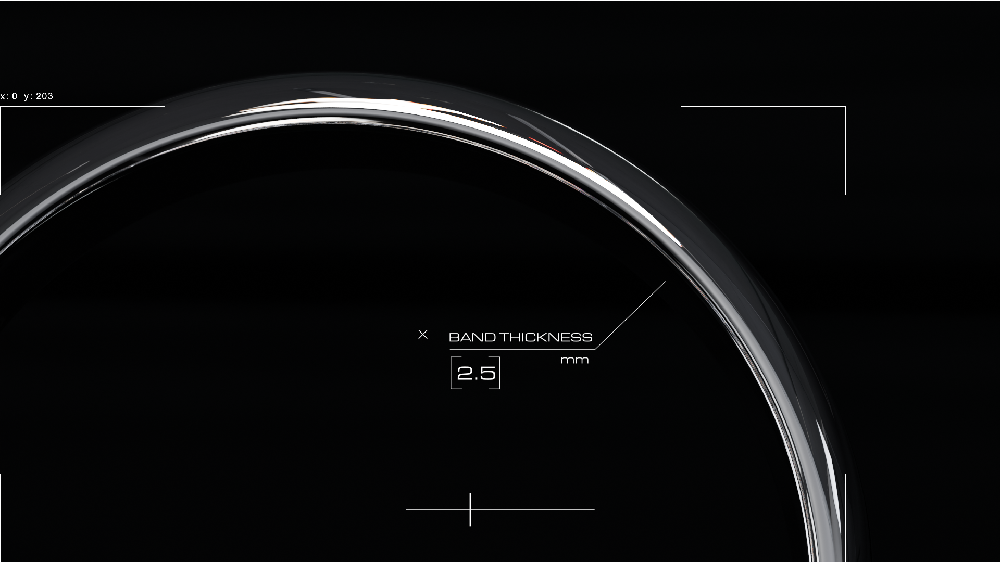
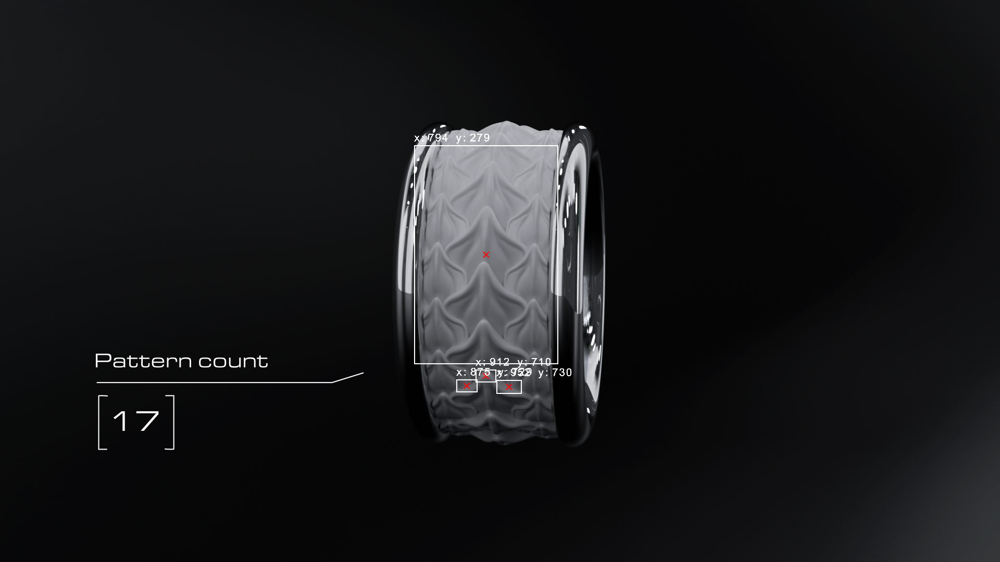

I was interested in why custom jewellery feels inaccessible to the younger demographic. I found that custom pieces required a high level of design confidence from the customer, knowledge on the process and a large commitment while mainstream alternatives offered little more than simple engraving. Studio-925 offers a middle ground via a modular customisation system that balances a meaningful customisation experience with a low barrier to entry.
[CASE STUDY]
2025
STUDIO-925
A contemporary jewellery brand exploring the intersection of digital and traditional craftsmanship.

[Problem identification]
[Finalised Styleframes]





As a showcase of the customisation system behind Studio-925, the visual direction was designed to visualise the underlying system as much as possible. I achieved this through stylised wireframe renders, UI animations and a systematic, modern tech inspired blob tracking visual style.
[PHYSICAL PRODUCTS WIP]

From modeling to 3D Printing to casting and refinement. There were definitely quite a lot of surface defects from the 3D printing process — mostly from user error. The rings however were dimensionally accurate and looked acceptably close to their original rendering which was the main success criteria of experiment 1.
[SYSTEMS AND TESTING]